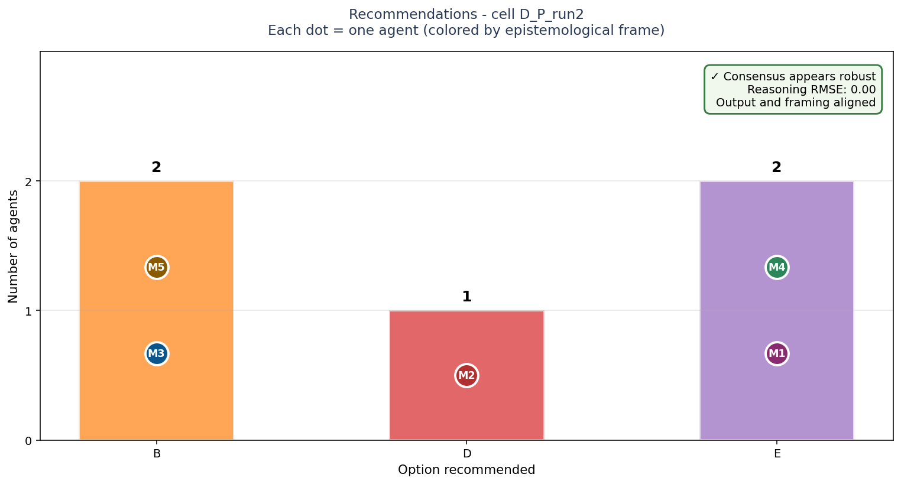
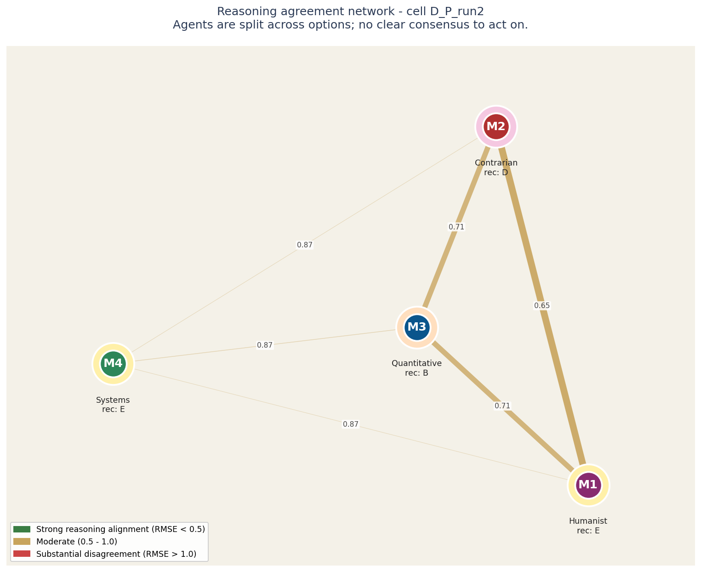
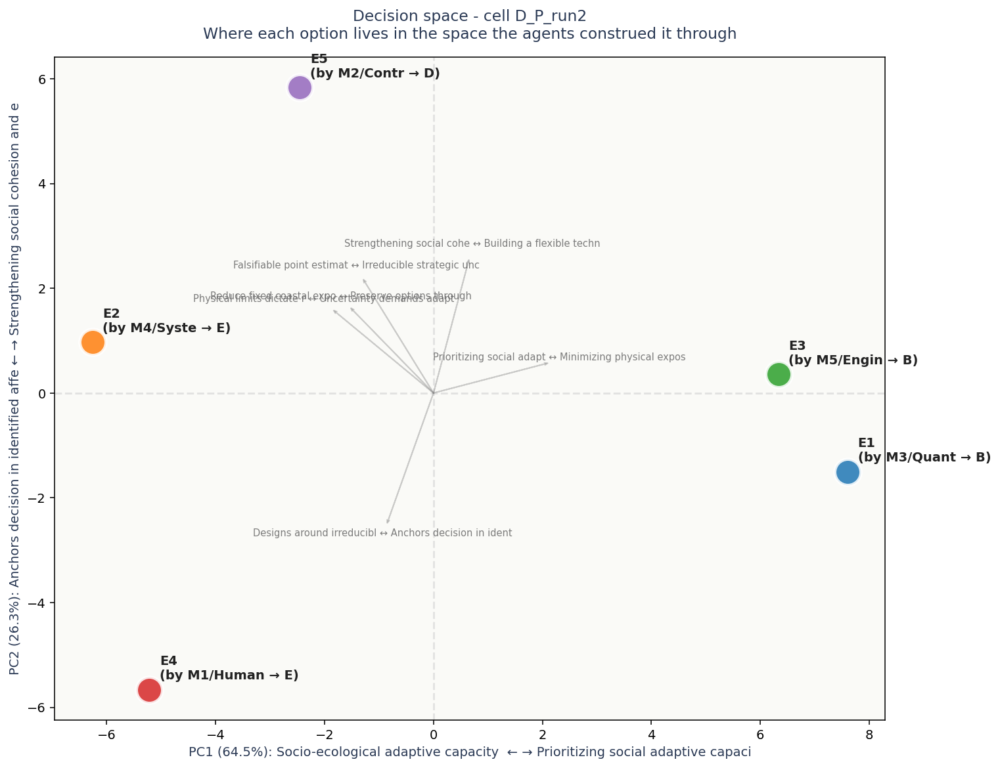

# Task D: National climate adaptation strategy
## Context
You are advising the national government of a mid-sized coastal country (population ~50M, GDP ~$1T, 4500 km of coastline) on its 15-year climate adaptation strategy. The country faces compounding pressures: projected sea-level rise of 30-50 cm by 2040, increasingly frequent extreme weather (3 major hurricanes in the past 5 years vs the historical baseline of one per decade), agricultural shifts (10-15% reduction in current crop yields projected by 2035), internal climate migration (estimated 2-3M displaced from coastal/low-lying areas over the horizon), and fiscal constraints (climate budget capped at 2.5% of GDP, ~$25B/year).
Five candidate national strategies have been developed by inter-ministerial working groups. **Choose one as the primary strategy.** The chosen strategy will define ~70% of the climate budget allocation; the remaining 30% goes to baseline preparedness regardless.
## Options
**Option A: Hard infrastructure-first ("seawalls and grids")**
Concentrate spending on engineered defenses: seawalls, reinforced ports, flood barriers, hardened power grids, desalination plants. Outcomes: protects existing assets and current population centers; high engineering certainty; visible/legible to public; lock-in of current geography. Risks: hard infrastructure can be overtopped by worse-than-projected events; doesn't address inland or systemic pressures; "fortress mentality."
**Option B: Managed retreat and relocation**
Plan and fund gradual depopulation of highest-risk coastal zones over 15 years. Buy-out programs, relocation incentives, new inland city development, abandonment of vulnerable infrastructure. Outcomes: reduces long-term exposure dramatically; frees future budgets; aligns with worst-case projections. Risks: politically explosive (forced moves); cultural/heritage loss; new inland infrastructure also expensive; signal of "giving up."
**Option C: Ecosystem-based adaptation**
Invest in natural defenses: mangrove restoration, wetland reconstruction, coastal forest preservation, soil-microbe agriculture, watershed management. Outcomes: cheaper per km than hard infrastructure (~30%); co-benefits (biodiversity, fisheries, carbon sink); self-healing. Risks: slower to deploy (5-10 year maturation); less predictable protection levels; harder to attribute political wins.
**Option D: Technology-and-resilience platform**
Bet on adaptive technology: distributed renewable grids, AI-managed early warning, climate-tolerant crop genetics, mobile/modular infrastructure, supply chain redundancy. Outcomes: leverages knowledge economy strengths; creates exportable IP; flexibility under uncertainty. Risks: technology bets may not mature in time; vulnerable to systemic tech failures (cyber, supply); doesn't address physical fixed assets.
**Option E: Social cohesion and human capital first**
Prioritize the people who'll face the changes: universal climate health insurance, retraining for displaced workers, expanded social housing for migrants, climate education in schools, community-led adaptation funds at the municipality level. Outcomes: builds adaptive capacity at every income level; politically durable (broad benefit); addresses indirect climate harms (mental health, social cohesion). Risks: physical infrastructure deteriorates; political resistance from technical/industrial interests; slow visible impact.
## What to provide
Choose one option as primary strategy. Provide 200-400 words of reasoning. Advocate for your choice rather than enumerate trade-offs of all five. Address: why this option, why not the most plausible alternative, what its main vulnerability is.

Bars show how many agents recommended each option. Each bar is annotated with the individual agents who supported it, color-coded by epistemological frame.
The key signal is in the corner box. A check-mark means the panel's agreement runs deep - they share both the recommendation and the reasoning. A warning means they share the recommendation but not the underlying logic; this is the configuration most likely to produce execution surprises.
| Voice | Recommends | Why (in their words) |
|---|---|---|
| M1 (H) | E | # Recommendation: Option E — Social cohesion and human capital first |
| M2 (C) | D | **Recommendation: Option D — Technology-and-resilience platform.** |
| M3 (Q) | B | To maximize expected value under systemic uncertainty, the empirical data points to exactly one optimal solution: **Option B (Managed retreat and relocation)**. |
| M4 (S) | E | Option E is the correct strategic choice because it targets the deepest leverage point in the system: the adaptive capacity of the population itself. From a systems-strategist perspective, resilience is not a physical property of seawalls or crop genomes—it is the distributed cap |
| M5 (E) | B | The binding constraint is not politics or emission trajectories, but the physical mismatch between an escalating stochastic ocean-energy gradient and 4,500 km of fixed coastal exposure under a hard $25 billion annual budget. You cannot statically resist an ocean that has already |

Each circle is an LLM agent in the panel. Position on the canvas reflects how similarly the agent rated all the elements: agents close together reason about the decision in similar ways, agents far apart reason differently.
The lines between circles encode reasoning agreement. Green-and-thick = the two agents reason almost identically. Yellow-medium = they differ on framing. Red-thin = substantial disagreement at the reasoning level even if their final recommendations might match.
Inside each circle is the agent label and its epistemological frame (Quantitative, Systems, Engineering, Humanist, Contrarian). The halo color around each circle indicates which option that agent recommended.
For this case: Agents are split across options; no clear consensus to act on.
Operator note: halos show different recommendations - the panel is split. The network helps you see WHICH agents reason alike and which don't, which is more useful than counting votes.

Each colored dot is one of the 5 options under consideration, positioned in a 2D space derived from how all the agents rated all the constructs. Options close together were seen similarly by the panel; options far apart were seen as fundamentally different kinds of choices.
The axes are interpretable. The horizontal axis (PC1) is dominated by Socio-ecological adaptive capacity as leverage poi on one end and Prioritizing social adaptive capacity and human ca on the other - this is the single biggest dimension along which the options differ. The vertical axis (PC2) is dominated by Anchors decision in identified affected population vs Strengthening social cohesion and equity as core s.
Gray arrows show which construct dimensions point in which direction. If two options are far apart along one arrow, the construct that arrow represents is what makes them feel different. If an arrow is short, that construct does not strongly differentiate the options.
Each label shows: option ID, the agent who authored that response, their epistemological frame, and the option they recommended.
No obvious blind spots detected. The voices collectively explored the dimensions of this decision.
Concerns each voice flagged in passing - worth surfacing before action: